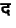
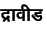
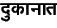

In the TEX interface, characters with any non-zero Y offset are not correctly printed in some cases, when the PostScript font Devnac is used. I have only seen this happen for the  consonant, in cases such as the da-u consonant-vowel, or the da-ra ligature, words such as draaviiDa () or dukaanaat . Note that it is only in certain cases that the word is printed incorrectly, in most cases it is handled correctly. Usually, when the word appears near the end of the line, TEX (or dvips, I'm inclined to think it is dvips) inserts a negative kern just before the character with a non-zero Y offset, and the word appears squashed up at that point. Have no remedy for this, only workaround is to force a line break before the problem word, it usually sets everything right.
I have never encountered this problem when using Frans Velthuis's Devnag font with the itrans package, therefore this problem is probably related to the use of PostScript fonts in TEX.
2009-12-04
ITRANS Home Page: http://www.aczoom.com/itrans/